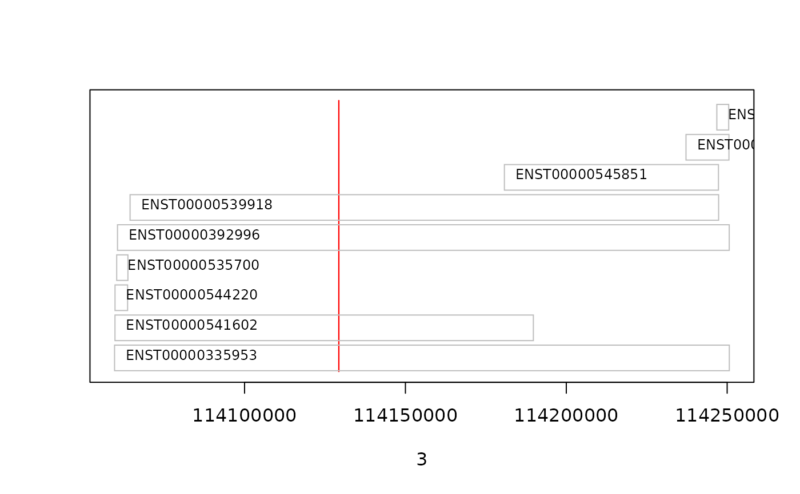

R/Classes.R, R/Methods-Filter.R, R/Methods.R
Filter-classes.Rdensembldb supports most of the filters from the AnnotationFilter
package to retrieve specific content from EnsDb databases. These filters
can be passed to the methods such as genes() with the filter parameter
or can be added as a global filter to an EnsDb object (see
addFilter() for more details). Use supportedFilters() to get an
overview of all filters supported by EnsDb object.
seqnames: accessor for the sequence names of the GRanges
object within a GRangesFilter.
seqnames: accessor for the seqlevels of the GRanges
object within a GRangesFilter.
supportedFilters returns a data.frame with the
names of all filters and the corresponding field supported by the
EnsDb object.
OnlyCodingTxFilter()
ProtDomIdFilter(value, condition = "==")
ProteinDomainIdFilter(value, condition = "==")
ProteinDomainSourceFilter(value, condition = "==")
UniprotDbFilter(value, condition = "==")
UniprotMappingTypeFilter(value, condition = "==")
TxSupportLevelFilter(value, condition = "==")
TxIsCanonicalFilter(value, condition = "==")
TxExternalNameFilter(value, condition = "==")
# S4 method for GRangesFilter
seqnames(x)
# S4 method for GRangesFilter
seqlevels(x)
# S4 method for EnsDb
supportedFilters(object, ...)The value(s) for the filter. For GRangesFilter it has to be a
GRanges object.
character(1) specifying the condition of the
filter. For character-based filters (such as
GeneIdFilter) "==", "!=", "startsWith" and "endsWith" are
supported. Allowed values for integer-based filters (such as
GeneStartFilter) are "==", "!=", "<". "<=", ">" and ">=".
For seqnames, seqlevels: a GRangesFilter object.
For supportedFilters: an EnsDb object.
For supportedFilters: currently not used.
For ProtDomIdFilter: A ProtDomIdFilter object.
For ProteinDomainIdFilter: A ProteinDomainIdFilter object.
For ProteinDomainSourceFilter: A ProteinDomainSourceFilter
object.
For UniprotDbFilter: A UniprotDbFilter object.
For UniprotMappingTypeFilter: A UniprotMappingTypeFilter object.
For TxSupportLevel: A TxSupportLevel object.
For TxIsCanonicalFilter: A TxIsCanonicalFilter object.
For TxExternalNameFilter: A TxExternalNameFilter object.
For supportedFilters: a data.frame with the names and
the corresponding field of the supported filter classes.
ensembldb supports the following filters from the AnnotationFilter
package:
GeneIdFilter: filter based on the Ensembl gene ID.
GeneNameFilter: filter based on the name of the gene as provided
Ensembl. In most cases this will correspond to the official gene symbol.
SymbolFilter filter based on the gene names. EnsDb objects don't
have a dedicated symbol column, the filtering is hence based on the
gene names.
GeneBiotype: filter based on the biotype of genes (e.g.
"protein_coding").
GeneStartFilter: filter based on the genomic start coordinate of genes.
GeneEndFilter: filter based on the genomic end coordinate of genes.
EntrezidFilter: filter based on the genes' NCBI Entrezgene ID.
TxIdFilter: filter based on the Ensembld transcript ID.
TxNameFilter: to be compliant with TxDb object from the
GenomicFeatures package tx_name in fact represents the Ensembl
transcript ID. Thus, the the tx_id and tx_name columns contain the
same information and the TxIdFilter and TxNameFilter are in fact
identical. The names of transcripts (i.e. the external name field in
Ensembl are stored in column "tx_external_name" (and which can be
filtered using the TxExternalNameFilter.
TxBiotypeFilter: filter based on the transcripts' biotype.
TxStartFilter: filter based on the genomic start coordinate of the
transcripts.
TxEndFilter: filter based on the genonic end coordinates of the
transcripts.
ExonIdFilter: filter based on Ensembl exon IDs.
ExonRankFilter: filter based on the index/rank of the exon within the
transcrips.
ExonStartFilter: filter based on the genomic start coordinates of the
exons.
ExonEndFilter: filter based on the genomic end coordinates of the exons.
GRangesFilter: Allows to fetch features within or overlapping specified
genomic region(s)/range(s). This filter takes a GRanges object
as input and, if type = "any" (the default) will restrict results to
features (genes, transcripts or exons) that are partially overlapping the
region. Alternatively, by specifying condition = "within" it will
return features located within the range. In addition, the GRangesFilter
condition = "start", condition = "end" and condition = "equal"
filtering for features with the same start or end coordinate or that are
equal to the GRanges.
Note that the type of feature on which the filter is applied depends on
the method that is called, i.e. genes() will filter on the
genomic coordinates of genes, transcripts() on those of
transcripts and exons() on exon coordinates.
Calls to the methods exonsBy(), cdsBy() and
transcriptsBy() use the start and end coordinates of the
feature type specified with argument by (i.e. "gene",
"transcript" or "exon") for the filtering.
If the specified GRanges object defines multiple regions, all
features within (or overlapping) any of these regions are returned.
Chromosome names/seqnames can be provided in UCSC format (e.g.
"chrX") or Ensembl format (e.g. "X"); see seqlevelsStyle() for
more information.
SeqNameFilter: filter based on chromosome names.
SeqStrandFilter: filter based on the chromosome strand. The strand can
be specified with value = "+", value = "-", value = -1 or
value = 1.
ProteinIdFilter: filter based on Ensembl protein IDs. This filter is
only supported if the EnsDb provides protein annotations; use the
hasProteinData() method to check.
UniprotFilter: filter based on Uniprot IDs. This filter is only
supported if the EnsDb provides protein annotations; use the
hasProteinData() method to check.
In addition, the following filters are defined by ensembldb:
TxExternalNameFilter: filter based on the transcript's external name
(if available).
TxSupportLevel: allows to filter results using the provided transcript
support level. Support levels for transcripts are defined by Ensembl
based on the available evidences for a transcript with 1 being the
highest evidence grade and 5 the lowest level. This filter is only
supported on EnsDb databases with a db schema version higher 2.1.
UniprotDbFilter: allows to filter results based on the specified Uniprot
database name(s).
UniprotMappingTypeFilter: allows to filter results based on the mapping
method/type that was used to assign Uniprot IDs to Ensembl protein IDs.
ProtDomIdFilter, ProteinDomainIdFilter: allows to retrieve entries
from the database matching the provided filter criteria based on their
protein domain ID (protein_domain_id).
ProteinDomainSourceFilter: filter results based on the source
(database/method) defining the protein domain (e.g. "pfam").
OnlyCodingTxFilter: allows to retrieve entries only for protein coding
transcripts, i.e. transcripts with a CDS. This filter does not take any
input arguments.
For users of ensembldb version < 2.0: in the GRangesFilter from the
AnnotationFilter package the condition parameter was renamed to type
(to be consistent with the IRanges package). In addition,
condition = "overlapping" is no longer recognized. To retrieve all
features overlapping the range type = "any" has to be used.
Protein annotation based filters can only be used if the
EnsDb database contains protein annotations, i.e. if hasProteinData
is TRUE. Also, only protein coding transcripts will have protein
annotations available, thus, non-coding transcripts/genes will not be
returned by the queries using protein annotation filters.
supportedFilters() to list all filters supported for EnsDb objects.
listUniprotDbs() and listUniprotMappingTypes() to list all Uniprot
database names respectively mapping method types from the database.
GeneIdFilter() in the AnnotationFilter package for more details on the
filter objects.
genes(), transcripts(), exons(), listGenebiotypes(),
listTxbiotypes().
addFilter() and filter() for globally adding filters to an EnsDb.
## Create a filter that could be used to retrieve all informations for
## the respective gene.
gif <- GeneIdFilter("ENSG00000012817")
gif
#> class: GeneIdFilter
#> condition: ==
#> value: ENSG00000012817
## Create a filter for a chromosomal end position of a gene
sef <- GeneEndFilter(10000, condition = ">")
sef
#> class: GeneEndFilter
#> condition: >
#> value: 10000
## For additional examples see the help page of "genes".
## Example for GRangesFilter:
## retrieve all genes overlapping the specified region
grf <- GRangesFilter(GRanges("11", ranges = IRanges(114129278, 114129328),
strand = "+"), type = "any")
library(EnsDb.Hsapiens.v86)
edb <- EnsDb.Hsapiens.v86
genes(edb, filter = grf)
#> GRanges object with 1 range and 6 metadata columns:
#> seqnames ranges strand | gene_id
#> <Rle> <IRanges> <Rle> | <character>
#> ENSG00000109906 11 114059593-114250676 + | ENSG00000109906
#> gene_name gene_biotype seq_coord_system symbol
#> <character> <character> <character> <character>
#> ENSG00000109906 ZBTB16 protein_coding chromosome ZBTB16
#> entrezid
#> <list>
#> ENSG00000109906 7704
#> -------
#> seqinfo: 1 sequence from GRCh38 genome
## Get also all transcripts overlapping that region.
transcripts(edb, filter = grf)
#> GRanges object with 4 ranges and 6 metadata columns:
#> seqnames ranges strand | tx_id
#> <Rle> <IRanges> <Rle> | <character>
#> ENST00000335953 11 114059593-114250676 + | ENST00000335953
#> ENST00000541602 11 114059725-114189764 + | ENST00000541602
#> ENST00000392996 11 114060507-114250652 + | ENST00000392996
#> ENST00000539918 11 114064412-114247344 + | ENST00000539918
#> tx_biotype tx_cds_seq_start tx_cds_seq_end
#> <character> <integer> <integer>
#> ENST00000335953 protein_coding 114063301 114250555
#> ENST00000541602 retained_intron <NA> <NA>
#> ENST00000392996 protein_coding 114063301 114250555
#> ENST00000539918 nonsense_mediated_de.. 114064412 114121827
#> gene_id tx_name
#> <character> <character>
#> ENST00000335953 ENSG00000109906 ENST00000335953
#> ENST00000541602 ENSG00000109906 ENST00000541602
#> ENST00000392996 ENSG00000109906 ENST00000392996
#> ENST00000539918 ENSG00000109906 ENST00000539918
#> -------
#> seqinfo: 1 sequence from GRCh38 genome
## Retrieve all transcripts for the above gene
gn <- genes(edb, filter = grf)
txs <- transcripts(edb, filter = GeneNameFilter(gn$gene_name))
## Next we simply plot their start and end coordinates.
plot(3, 3, pch=NA, xlim=c(start(gn), end(gn)), ylim=c(0, length(txs)),
yaxt="n", ylab="")
## Highlight the GRangesFilter region
rect(xleft=start(grf), xright=end(grf), ybottom=0, ytop=length(txs),
col="red", border="red")
for(i in 1:length(txs)){
current <- txs[i]
rect(xleft=start(current), xright=end(current), ybottom=i-0.975, ytop=i-0.125, border="grey")
text(start(current), y=i-0.5,pos=4, cex=0.75, labels=current$tx_id)
}

## Thus, we can see that only 4 transcripts of that gene are indeed
## overlapping the region.
## No exon is overlapping that region, thus we're not getting anything
exons(edb, filter = grf)
#> GRanges object with 0 ranges and 1 metadata column:
#> seqnames ranges strand | exon_id
#> <Rle> <IRanges> <Rle> | <character>
#> -------
#> seqinfo: no sequences
## Example for ExonRankFilter
## Extract all exons 1 and (if present) 2 for all genes encoded on the
## Y chromosome
exons(edb, columns = c("tx_id", "exon_idx"),
filter=list(SeqNameFilter("Y"),
ExonRankFilter(3, condition = "<")))
#> GRanges object with 1294 ranges and 3 metadata columns:
#> seqnames ranges strand | tx_id exon_idx
#> <Rle> <IRanges> <Rle> | <character> <integer>
#> ENSE00002088309 Y 2784749-2784853 + | ENST00000516032 1
#> ENSE00001494622 Y 2786855-2787699 - | ENST00000383070 1
#> ENSE00001772499 Y 2789827-2790328 + | ENST00000454281 1
#> ENSE00001614266 Y 2827982-2828218 + | ENST00000430735 1
#> ENSE00002490412 Y 2841486-2841627 + | ENST00000250784 1
#> ... ... ... ... . ... ...
#> ENSE00001632993 Y 26591548-26591601 - | ENST00000456738 1
#> ENSE00001616687 Y 26626520-26627159 - | ENST00000435741 1
#> ENSE00001638296 Y 26633345-26633431 - | ENST00000435945 2
#> ENSE00001797328 Y 26634523-26634652 - | ENST00000435945 1
#> ENSE00001794473 Y 56855244-56855488 + | ENST00000431853 1
#> exon_id
#> <character>
#> ENSE00002088309 ENSE00002088309
#> ENSE00001494622 ENSE00001494622
#> ENSE00001772499 ENSE00001772499
#> ENSE00001614266 ENSE00001614266
#> ENSE00002490412 ENSE00002490412
#> ... ...
#> ENSE00001632993 ENSE00001632993
#> ENSE00001616687 ENSE00001616687
#> ENSE00001638296 ENSE00001638296
#> ENSE00001797328 ENSE00001797328
#> ENSE00001794473 ENSE00001794473
#> -------
#> seqinfo: 1 sequence from GRCh38 genome
## Get all transcripts for the gene SKA2
transcripts(edb, filter = GeneNameFilter("SKA2"))
#> GRanges object with 10 ranges and 7 metadata columns:
#> seqnames ranges strand | tx_id
#> <Rle> <IRanges> <Rle> | <character>
#> ENST00000330137 17 59109951-59155269 - | ENST00000330137
#> ENST00000580541 17 59111886-59155184 - | ENST00000580541
#> ENST00000578105 17 59111888-59155184 - | ENST00000578105
#> ENST00000578519 17 59111890-59155182 - | ENST00000578519
#> ENST00000583927 17 59111943-59155260 - | ENST00000583927
#> ENST00000581068 17 59111956-59155248 - | ENST00000581068
#> ENST00000437036 17 59112047-59155194 - | ENST00000437036
#> ENST00000583380 17 59112091-59155174 - | ENST00000583380
#> ENST00000583976 17 59112262-59155177 - | ENST00000583976
#> ENST00000584089 17 59119387-59151801 - | ENST00000584089
#> tx_biotype tx_cds_seq_start tx_cds_seq_end
#> <character> <integer> <integer>
#> ENST00000330137 protein_coding 59112277 59155163
#> ENST00000580541 protein_coding 59112333 59155083
#> ENST00000578105 protein_coding 59112277 59155163
#> ENST00000578519 nonsense_mediated_de.. 59124363 59155163
#> ENST00000583927 processed_transcript <NA> <NA>
#> ENST00000581068 protein_coding 59112277 59155163
#> ENST00000437036 protein_coding 59112333 59155083
#> ENST00000583380 protein_coding 59112333 59155163
#> ENST00000583976 nonsense_mediated_de.. 59119474 59155083
#> ENST00000584089 protein_coding 59119387 59151771
#> gene_id tx_name gene_name
#> <character> <character> <character>
#> ENST00000330137 ENSG00000182628 ENST00000330137 SKA2
#> ENST00000580541 ENSG00000182628 ENST00000580541 SKA2
#> ENST00000578105 ENSG00000182628 ENST00000578105 SKA2
#> ENST00000578519 ENSG00000182628 ENST00000578519 SKA2
#> ENST00000583927 ENSG00000182628 ENST00000583927 SKA2
#> ENST00000581068 ENSG00000182628 ENST00000581068 SKA2
#> ENST00000437036 ENSG00000182628 ENST00000437036 SKA2
#> ENST00000583380 ENSG00000182628 ENST00000583380 SKA2
#> ENST00000583976 ENSG00000182628 ENST00000583976 SKA2
#> ENST00000584089 ENSG00000182628 ENST00000584089 SKA2
#> -------
#> seqinfo: 1 sequence from GRCh38 genome
## Which is the same as using a SymbolFilter
transcripts(edb, filter = SymbolFilter("SKA2"))
#> GRanges object with 10 ranges and 7 metadata columns:
#> seqnames ranges strand | tx_id
#> <Rle> <IRanges> <Rle> | <character>
#> ENST00000330137 17 59109951-59155269 - | ENST00000330137
#> ENST00000580541 17 59111886-59155184 - | ENST00000580541
#> ENST00000578105 17 59111888-59155184 - | ENST00000578105
#> ENST00000578519 17 59111890-59155182 - | ENST00000578519
#> ENST00000583927 17 59111943-59155260 - | ENST00000583927
#> ENST00000581068 17 59111956-59155248 - | ENST00000581068
#> ENST00000437036 17 59112047-59155194 - | ENST00000437036
#> ENST00000583380 17 59112091-59155174 - | ENST00000583380
#> ENST00000583976 17 59112262-59155177 - | ENST00000583976
#> ENST00000584089 17 59119387-59151801 - | ENST00000584089
#> tx_biotype tx_cds_seq_start tx_cds_seq_end
#> <character> <integer> <integer>
#> ENST00000330137 protein_coding 59112277 59155163
#> ENST00000580541 protein_coding 59112333 59155083
#> ENST00000578105 protein_coding 59112277 59155163
#> ENST00000578519 nonsense_mediated_de.. 59124363 59155163
#> ENST00000583927 processed_transcript <NA> <NA>
#> ENST00000581068 protein_coding 59112277 59155163
#> ENST00000437036 protein_coding 59112333 59155083
#> ENST00000583380 protein_coding 59112333 59155163
#> ENST00000583976 nonsense_mediated_de.. 59119474 59155083
#> ENST00000584089 protein_coding 59119387 59151771
#> gene_id tx_name symbol
#> <character> <character> <character>
#> ENST00000330137 ENSG00000182628 ENST00000330137 SKA2
#> ENST00000580541 ENSG00000182628 ENST00000580541 SKA2
#> ENST00000578105 ENSG00000182628 ENST00000578105 SKA2
#> ENST00000578519 ENSG00000182628 ENST00000578519 SKA2
#> ENST00000583927 ENSG00000182628 ENST00000583927 SKA2
#> ENST00000581068 ENSG00000182628 ENST00000581068 SKA2
#> ENST00000437036 ENSG00000182628 ENST00000437036 SKA2
#> ENST00000583380 ENSG00000182628 ENST00000583380 SKA2
#> ENST00000583976 ENSG00000182628 ENST00000583976 SKA2
#> ENST00000584089 ENSG00000182628 ENST00000584089 SKA2
#> -------
#> seqinfo: 1 sequence from GRCh38 genome
## Create a ProteinIdFilter:
pf <- ProteinIdFilter("ENSP00000362111")
pf
#> class: ProteinIdFilter
#> condition: ==
#> value: ENSP00000362111
## Using this filter would retrieve all database entries that are associated
## with a protein with the ID "ENSP00000362111"
if (hasProteinData(edb)) {
res <- genes(edb, filter = pf)
res
}
#> GRanges object with 1 range and 7 metadata columns:
#> seqnames ranges strand | gene_id
#> <Rle> <IRanges> <Rle> | <character>
#> ENSG00000000003 X 100627109-100639991 - | ENSG00000000003
#> gene_name gene_biotype seq_coord_system symbol
#> <character> <character> <character> <character>
#> ENSG00000000003 TSPAN6 protein_coding chromosome TSPAN6
#> entrezid protein_id
#> <list> <character>
#> ENSG00000000003 7105 ENSP00000362111
#> -------
#> seqinfo: 1 sequence from GRCh38 genome
## UniprotFilter:
uf <- UniprotFilter("O60762")
## Get the transcripts encoding that protein:
if (hasProteinData(edb)) {
transcripts(edb, filter = uf)
## The mapping Ensembl protein ID to Uniprot ID can however be 1:n:
transcripts(edb, filter = TxIdFilter("ENST00000371588"),
columns = c("protein_id", "uniprot_id"))
}
#> GRanges object with 2 ranges and 3 metadata columns:
#> seqnames ranges strand | protein_id
#> <Rle> <IRanges> <Rle> | <character>
#> ENST00000371588 20 50934867-50958550 - | ENSP00000360644
#> ENST00000371588 20 50934867-50958550 - | ENSP00000360644
#> uniprot_id tx_id
#> <character> <character>
#> ENST00000371588 O60762 ENST00000371588
#> ENST00000371588 A0A0S2Z4Y5 ENST00000371588
#> -------
#> seqinfo: 1 sequence from GRCh38 genome
## ProtDomIdFilter:
pdf <- ProtDomIdFilter("PF00335")
## Also here we could get all transcripts related to that protein domain
if (hasProteinData(edb)) {
transcripts(edb, filter = pdf, columns = "protein_id")
}
#> GRanges object with 165 ranges and 3 metadata columns:
#> seqnames ranges strand | protein_id
#> <Rle> <IRanges> <Rle> | <character>
#> ENST00000372003 1 46175087-46185958 + | ENSP00000361072
#> ENST00000271324 1 110873154-110899928 + | ENSP00000271324
#> ENST00000369516 1 115048011-115089464 - | ENSP00000358529
#> ENST00000369515 1 115050356-115089500 - | ENSP00000358528
#> ENST00000433172 1 115050383-115089414 - | ENSP00000415256
#> ... ... ... ... . ...
#> ENST00000378482 X 38561370-38688913 + | ENSP00000367743
#> ENST00000286824 X 38561544-38688397 + | ENSP00000286824
#> ENST00000612152 X 100627109-100637104 - | ENSP00000482130
#> ENST00000373020 X 100628670-100636806 - | ENSP00000362111
#> ENST00000614008 X 100632063-100637104 - | ENSP00000482894
#> tx_id protein_domain_id
#> <character> <character>
#> ENST00000372003 ENST00000372003 PF00335
#> ENST00000271324 ENST00000271324 PF00335
#> ENST00000369516 ENST00000369516 PF00335
#> ENST00000369515 ENST00000369515 PF00335
#> ENST00000433172 ENST00000433172 PF00335
#> ... ... ...
#> ENST00000378482 ENST00000378482 PF00335
#> ENST00000286824 ENST00000286824 PF00335
#> ENST00000612152 ENST00000612152 PF00335
#> ENST00000373020 ENST00000373020 PF00335
#> ENST00000614008 ENST00000614008 PF00335
#> -------
#> seqinfo: 13 sequences from GRCh38 genome